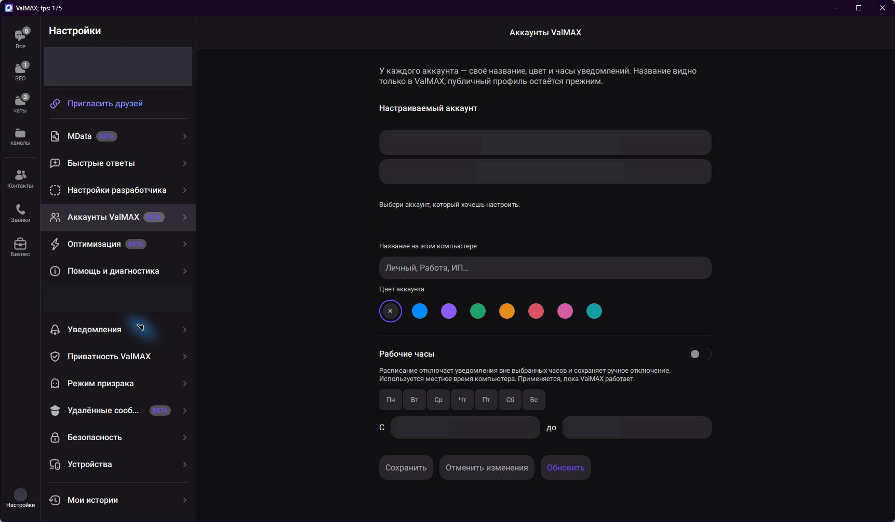

Несколько аккаунтов БЕТА
До трёх аккаунтов с собственными названиями, цветами и настройками уведомлений.
Для Windows x64 · версия 8.9.0
Пользуйтесь несколькими аккаунтами, отвечайте готовыми сообщениями и открывайте бизнес-кабинет в одной программе.
Неофициальный мод MAX. Отдельные функции помечены БЕТА и ещё проверяются.
Установщик для Windows x64 находится на GitHub Releases. Другие архивы на странице выпуска для установки не нужны.

Для общения и работы
Нужные действия остаются внутри привычного окна переписки.
До трёх аккаунтов с собственными названиями, цветами и настройками уведомлений.
Готовые сообщения и вложения по команде. Перед отправкой их можно проверить и изменить.
Открывайте официальный business.max.ru в отдельной вкладке ValMAX. Вход в кабинет выполняется отдельно.
Сохраните доступные сообщения, фото, видео и голосовые в HTML-архив. Программа показывает ход скачивания.
Если включить сохранение заранее, уже полученное сообщение после удаления может остаться пузырём с корзинкой в чате.
MData помогает перенести вход в свои аккаунты на другой компьютер с помощью файла, защищённого паролем.
Также есть PIN для отдельных чатов, настройки приватности, режим призрака и поиск фото и видео. Все возможности на GitHub
Как выглядит приложение
Полные окна работающего приложения. Личные данные закрыты вручную. Нажмите на снимок, чтобы рассмотреть его в полном размере.
Три шага
Для запуска программы не нужен Python. Скачивайте установщик только со страницы проекта на GitHub.
Открыть страницу выпуска 8.9.0Выберите ValMAX-8.9.0-Setup.exe в выпуске 8.9.0. Там же есть файл SHA256SUMS.txt для проверки загрузки.
Если ValMAX уже открыт, выберите «Выход» у его значка в трее. Крестик может только скрыть окно.
Следуйте шагам установщика и откройте ValMAX через ярлык. Первый запуск может занять до минуты.
Вкладке «Бизнес» и мини-приложениям нужен Microsoft Edge WebView2. Если его нет на компьютере, установщику понадобится интернет для загрузки официального компонента Microsoft.
Честно об ограничениях
Перед установкой стоит знать о функциях, которые ещё проходят проверку.
Экспорт сохраняет доступную переписку и медиа, но сервер не подтвердил полноту старой истории. Некоторые вложения могут не скачаться. HTML-архив не защищён паролем.
Функцию нужно включить до удаления. Она работает с уже полученными сообщениями; сохранение каждого события не гарантируется.
ValMAX не связан с командой MAX и хранит свой профиль отдельно от официального клиента. Программа не подписана сертификатом ValMAX, поэтому Windows может показать предупреждение.
MData содержит данные для доступа к аккаунтам. Храните файл и пароль отдельно, не публикуйте их. PIN защищает чат только внутри приложения и не шифрует базу сообщений.
Настройки приватности не обеспечивают полную анонимность. Все известные ограничения и результаты проверки указаны в заметках выпуска 8.9.0 .
Короткие ответы
Нет. ValMAX — неофициальная модификация для Windows. Права на MAX и сторонние компоненты принадлежат их правообладателям.
Нет. Для установленной версии ValMAX 8.9.0 отдельный Python не нужен.
Экспорт сохраняет доступную историю, фото, видео и голосовые. Сервер не подтвердил доступность всей старой переписки, поэтому архив может быть неполным.
Новые проверенные версии появляются в GitHub Releases. Перед обновлением полностью закройте ValMAX через меню значка в трее.
ValMAX 8.9.0
Скачайте установщик со страницы выпусков ValMAX на GitHub и настройте приложение под себя.